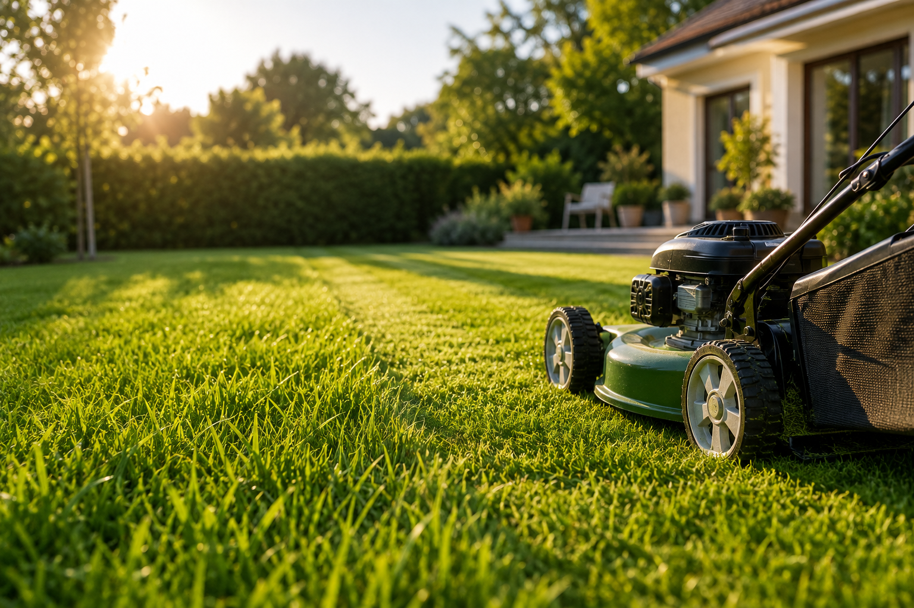
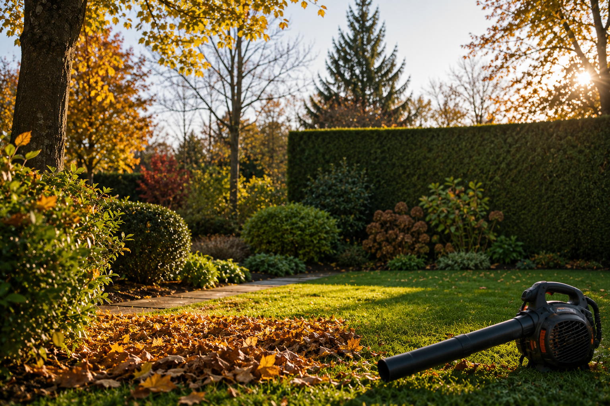
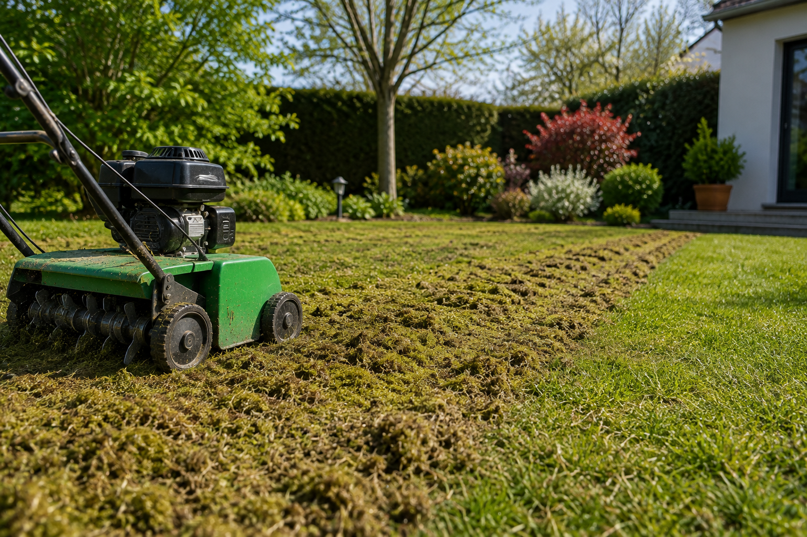
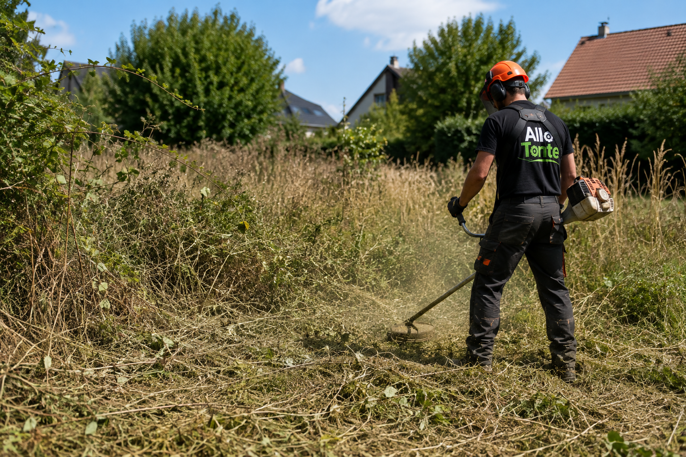

🌿 Tonte de pelouse
Quand tondre sa pelouse à Reims ? Le calendrier idéal
La bonne fréquence, les bons mois et les erreurs à éviter pour une pelouse dense et résistante toute l'année.
Lire l'article →Allo Tonte — Reims & Agglomération
Nos astuces pratiques pour un jardin impeccable toute l'année, saison après saison.
Des conseils simples et concrets pour prendre soin de votre jardin.

La bonne fréquence, les bons mois et les erreurs à éviter pour une pelouse dense et résistante toute l'année.
Lire l'article →
Les 5 étapes essentielles pour protéger votre pelouse, vos haies et vos massifs avant l'arrivée du froid.
Lire l'article →
Les signes qui montrent qu'un gazon en a besoin, la saison idéale et les étapes du processus.
Lire l'article →Services éligibles, montant du remboursement et démarches pour récupérer jusqu'à 50 % de votre facture.
Lire l'article →
La méthode étape par étape pour remettre en état un terrain envahi par les herbes hautes et les ronces.
Lire l'article →Devis gratuit sous 48h, sans engagement.